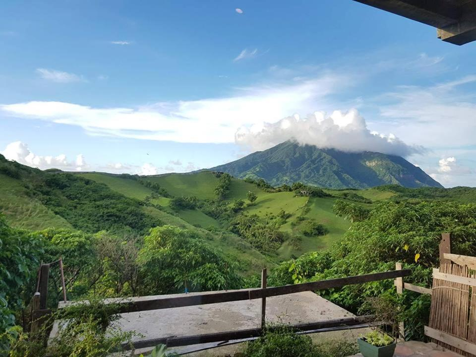
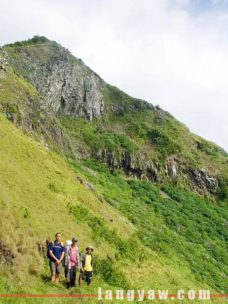

15 min
Airport
It is one of two airports in the Batanes Islands, the other being Itbayat Airport. It is located in the provincial capital, Basco.
Address: CXXG+MC4, Basco, Batanes
Code: BSO
Elevation: 89 m
Journey
To reach Mount Iraya in Batanes from Manila, travelers can take a domestic flight to Basco Airport, the main gateway to the province. Upon landing at Basco Airport, they can use tricycles or van services to reach various destinations on Batan Island, including the vicinity of Mount Iraya. To ascend the actual summit of Mount Iraya, a challenging hiking expedition is required, and it's advisable to have proper hiking gear and the assistance of local guides. Once at the vicinity of Mount Iraya, visitors can enjoy the breathtaking scenic views and stunning landscapes. It's essential to stay informed about updated travel arrangements, flight schedules, and local regulations before planning the trip. During their visit, tourists should practice responsible tourism and respect the environment and local culture.
Accomodations
There are no specific accommodations directly on Mount Iraya in Batanes, as it is a natural attraction primarily visited by hikers and nature enthusiasts. For lodging options, travelers can stay in Basco town, the nearest town to Mount Iraya. Basco offers a range of accommodations, including hotels, inns, lodges, guesthouses, and nature lodges. It is advisable to book accommodations in advance, especially during peak seasons. Since Mount Iraya is not heavily developed for tourism, visitors should plan hikes with local guides and follow safety guidelines.

Restaurants
Visitors can find various dining options in Basco town, the nearest town to Mount Iraya. Basco offers restaurants, cafés, local eateries, and carinderias serving traditional Ivatan cuisine and Filipino dishes. Some guesthouses or homestays may also offer meals as part of their accommodation packages. As the dining scene may be limited due to the remote location of Batanes, visitors are advised to plan accordingly and inquire about dining options before their trip to Mount Iraya and Batanes.

What's Popular
When visiting Mount Iraya in Batanes, don't miss the challenging yet rewarding hike to the summit, where you can enjoy stunning scenic views and capture nature's beauty through photography. Plan your hike during sunrise or sunset for a magical experience. Show respect for nature, practice responsible hiking, and be prepared with proper gear and a local guide for safety. Learn about the cultural significance of Mount Iraya to the Ivatan people and take time to observe wildlife. Stay weather-aware, and most importantly, connect with nature to make your visit unforgettable.
Nearest Spots
Several captivating destinations can be explored on Batan Island, which is easily accessible from the vicinity of the mountain. Some must-visit attractions include Valugan Boulder Beach, Basco Lighthouse, Vayang Rolling Hills, Racuh A Payaman (Marlboro Country), Dipnaysupuan Japanese Tunnel, Mahatao Boat Shelter Port, Chawa View Deck, Homoron Blue Lagoon, Tayid Lighthouse, and Dipnaysuhuan Japanese Tunnel. Each of these destinations showcases the natural beauty and cultural heritage of Batanes, ensuring an unforgettable experience for visitors. Plan your itinerary accordingly to explore these attractions and make the most of your trip to Batan Island.